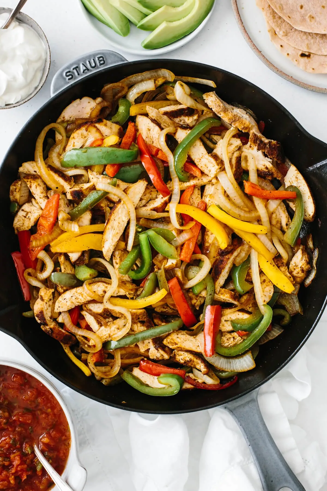

Chicken Fajitas

Description
Don't you just love meals that only require a few basic ingredients? Well this chicken fajita recipe is just that. All you need is
chicken, bell pepper, onion, lime juice and spices, plus tortillas and your favorite toppings. It’s incredibly easy.
It’s a one-pan recipe and in less than 30 minutes, you’ll have a tasty meal (I can't get enough of those Mexican spices) that also
makes for the best leftovers or meal prep.
Ingredients
- Chili Powder
- Ground Cumin
- Garlic Powder
- Paprika
- Oregano
- Salt
- Pepper
Steps
- Season the chicken. Generously sprinkle the fajita seasoning on both sides of the chicken and use your fingers to press it in.
- Cook the chicken. Heat a large skillet over medium heat and lightly coat it with a drizzle of olive oil or avocado oil. Sear the chicken breasts for about 7-8 minutes on each side. Then remove them from the pan and let them rest for a few minutes before slicing into strips.
- Saute the bell peppers and onion. While the chicken is cooking, cut the bell peppers and onions into thin slices. Then saute them in the same skillet over medium heat for a few minutes until caramelized. You’re essentially making fajita veggies.
- Mix together. Add the chicken back into the skillet, squeeze fresh lime juice on top and stir everything together.
- Wrap it up. Serve immediately with tortillas and extra toppings.